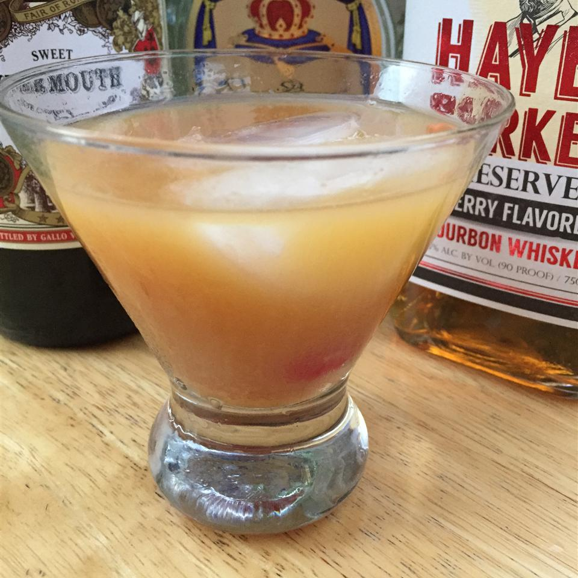

Blood and Sand Cocktail

Description
This long forgotten Prohibition-era cocktail is named for the 1922 movie starring Rudolph Valentino. It is the movie which, on his death bed, he stated he'd like to be his legacy. Try this drink straight up, and toast one of the most revered actors of silent film.
Ingredients
- ½ fluid ounce Scotch whiskey
- ½ fluid ounce sweet vermouth
- ½ fluid ounce orange juice
- ½ fluid ounce cherry-flavored brandy
- 1 cup ice cubes
Directions
- Combine Scotch, sweet vermouth, orange juice, and brandy in a cocktail shaker. Add ice, cover, and shake until chilled. Strain into a chilled glass.n